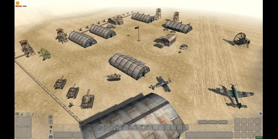

Mastering the Art of Tank Warfare - El Alamein
Strategies
Posted by: Sgt_SteelTiger | March 10, 2002 | Filed
under: Tactics, Vehicles
Whats up soldiers! After countless hours pwning n00bs on El Alamein, I
figured it was time to share some of my elite tank strategies. This
desert map is ALL about armor control, and if ur team doesn't know these
tricks, prepare to get owned HARD.
First off, forget what everyone keeps saying about rushing the center
flag. That's a total deathtrap unless you've got SERIOUS air support.
The real pro strat is to form a "crescent" formation with 3-4 tanks
along the eastern ridge. From there u can totally dominate the map while
staying protected from air attacks.
My clan (=WW2= Warriors) used this last weekend in CAL and totally
destroyed the competition. The trick is having a dedicated repair guy
for each tank. Some ppl think engineers are useless but they're SO
wrong. A good engineer/tank combo is practically UNSTOPPABLE!!
ELITE TANK TACTICS FOR EL ALAMEIN
Here's my step-by-step guide to dominating in tanks on El Alamein:
- FORMATION IS KEY - Always maintain the crescent
formation along the eastern ridge. Each tank should be about 50-75m
apart with clear lines of sight to the center flags.
- ENGINEER SUPPORT - Every tank MUST have a dedicated
engineer. The engineer should stay on the opposite side of the tank
from enemy fire and constantly repair.
- TARGET PRIORITY - Always take out enemy tanks
first, then planes, then infantry. A good tank crew communicates
targets clearly.
- RIDGE FIGHTING - Only expose your turret when
firing. Back down behind the ridge while reloading to avoid getting
hit.
- DEFILADE POSITION - Learn to use "hull down"
positions where only your turret is visible to enemies.

The map above shows the optimal positions for your tank formation. Notice
how we maintain control of both the center and the eastern flags while
having perfect sight lines to the enemy spawn.
COUNTER-TACTICS
If the enemy team is using the same strategy, here's how to counter it:
- Use smoke grenades (mod required) to blind their sight lines
- Coordinate bomber runs from multiple directions
- Send infiltration squads of engineers with explosives behind their
lines
- Use the western ridge to flank their position with fast-moving Jeeps
I've been testing these strategies with my clan for weeks now and our win
rate on El Alamein has gone from 65% to over 90%! The key is
COMMUNICATION and COORDINATION. Make sure everyone on your team knows
their role and sticks to it.
If anyone wants to join us for practice or scrims, we're always looking
for more skilled players who understand TEAMWORK. Our clan server is up
24/7 at 216.54.23.78:14567 (password: ww2warriors).
Next week I'll be posting my guide to air superiority on Midway, so check
back for more elite strats!


 Start
Start
COMMENTS: